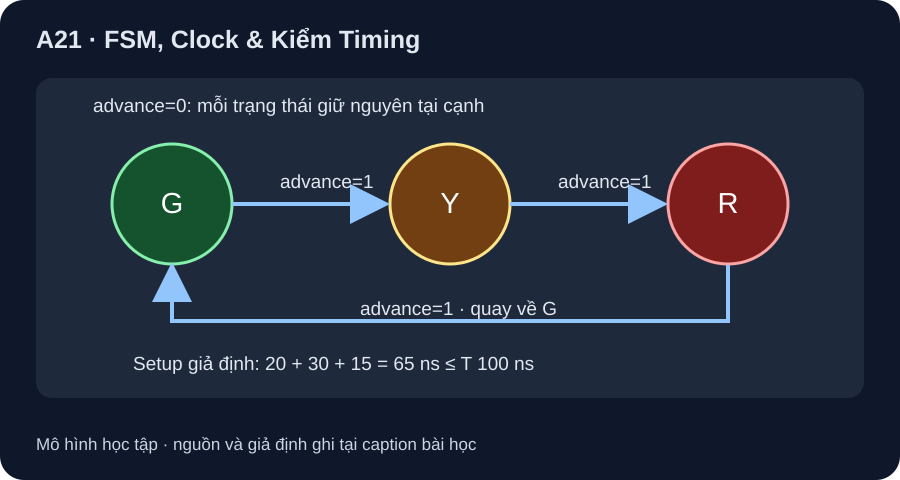

FSM, Clock & Kiểm Timing
Trạng thái đổi ở cạnh hợp lệ; timing cần điều kiện cả setup, hold, clock và đầu vào bất đồng bộ.
- Lập bảng chuyển trạng thái Moore đủ ba trạng thái và hai giá trị advance.
- Trace trạng thái sau từng cạnh, tách output theo trạng thái khỏi input tức thời.
- Kiểm điều kiện setup của đường register→logic→register với các delay giả định và nêu các điều kiện chưa được kiểm.

Đọc hình bằng chữ
Có ba trạng thái G, Y, R với output Moore tương ứng xanh, vàng, đỏ. Tại mỗi cạnh lên, advance 0 giữ trạng thái; advance 1 cho G sang Y, Y sang R, R sang G. Đường thời gian giả định gồm clock-to-Q tối đa 20 ns, logic tổ hợp tối đa 30 ns và setup 15 ns, tổng 65 ns, để so với chu kỳ 100 ns; hình không đưa dữ liệu hold/min delay.
1. Máy trạng thái Moore ba trạng thái
Chọn trạng thái khởi đầu G (xanh). Output Moore phụ thuộc trạng thái hiện tại: G bật nhãn xanh, Y nhãn vàng, R nhãn đỏ. Tại cạnh lên, advance=0 giữ trạng thái; advance=1 đi G→Y→R→G. Đây là mô hình học toán, không phải bộ điều khiển đèn giao thông an toàn: không có pha all-red, interlock, giám sát lỗi hoặc thời gian thực.
| Trạng thái hiện tại | Output Moore | advance=0 → sau cạnh | advance=1 → sau cạnh |
|---|---|---|---|
| G | Xanh | G | Y |
| Y | Vàng | Y | R |
| R | Đỏ | R | G |
Ví dụ từ G với advance ổn định trước bốn cạnh là 1,0,1,1: sau các cạnh nhận Y,Y,R,G; output tương ứng vàng, vàng, đỏ, xanh. Nếu đầu vào đổi giữa hai cạnh, trạng thái chưa đổi; nếu đổi quá sát cạnh có thể vi phạm timing, không được tự gán hàng nào là chắc.
2. Kiểm đường setup, giữ riêng các điều kiện khác
Với hai register trên cùng clock lý tưởng, bỏ qua skew/jitter trong ví dụ giả định, cần T ≥ tCQ,max + tcomb,max + tsetup. Cho 20 ns + 30 ns + 15 ns = 65 ns; nếu T=100 ns thì còn biên setup 35 ns. Nếu T=60 ns, thiếu 5 ns, nên không đạt điều kiện setup trong model. Các trị 20/30/15 ns không lấy từ SN74HC74 hoặc một board nào. MIT 6.004 §5.1 tách yêu cầu setup và hold.
Để kết luận mạch thật, còn cần bất đẳng thức hold dùng minimum clock-to-Q/logic contamination delay và clock skew, độ rộng xung clock, reset và điều kiện điện. Trong một mô hình riêng không skew, điều kiện là tCQ,min+tcomb,min ≥ thold; nếu giả sử 2+3 ≥ 4 ns thì biên hold là 1 ns. Ba số này cũng chỉ là giả định dạy cách kiểm; đường của ví dụ setup không hề có min delay, nên hold của nó vẫn chưa kiểm. Đầu vào advance bất đồng bộ có thể đến sát cạnh; MIT §6.1 giải thích metastability. Bộ đồng bộ nhiều tầng giảm xác suất lan truyền nếu thiết kế đúng, không thể cam kết thời gian giải quyết hữu hạn cho mọi sự kiện; nếu là nút bấm còn cần xử lý dội phím và xác định một lần bấm ứng với mấy cạnh.
3. Hoạt động bảng trạng thái/timing
Viết sáu hàng (G,Y,R)×(0,1), đánh dấu output từng trạng thái, sau đó trace từ G theo 1,0,1,1. Tạo bảng T=60, 65, 100 ns, cột T−(20+30+15) lần lượt −5, 0, 35 ns; ghi 65 ns là đúng ranh giới toán học trong giả định, không có margin. Thêm cột “hold/clock/async” là chưa kiểm, không điền PASS.
Hình FSM không chứa transistor/relay/nguồn, phần mềm MCU hoặc chứng nhận an toàn. Các output chỉ là nhãn. Nếu hiện thực, phải chọn nền tảng/part/revision, sơ đồ, clock/reset, synchronizer/debounce, timing path, và kiểm điều kiện lỗi; P9-04 mới xét lab tích hợp.
Từ G, advance ổn định trước bốn cạnh là 1,1,0,1. Ghi trạng thái và output sau từng cạnh. Cùng đường giả định tCQ,max=20 ns, tcomb,max=30 ns, tsetup=15 ns: chu kỳ T=60 ns đạt setup không? Có được kết luận hold và đầu vào bất đồng bộ đều an toàn không?
- 1 điểm: trạng thái sau bốn cạnh là
Y,R,R,G. - 1 điểm: output Moore là vàng, đỏ, đỏ, xanh.
- 1 điểm: tổng max+setup
65 ns; T=60 ns thiếu 5 ns, không đạt setup trong giả định không skew/jitter. - 1 điểm: chưa thể kết luận hold vì thiếu minimum delay/skew; max setup không thay thế kiểm hold.
- 1 điểm: advance bất đồng bộ có nguy cơ metastability; cần đồng bộ/debounce theo thiết kế cụ thể, không thể bảo đảm tuyệt đối bằng trace này.